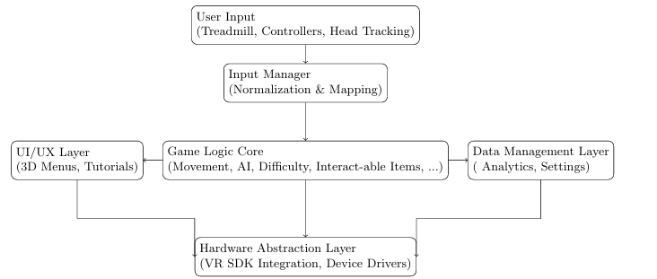
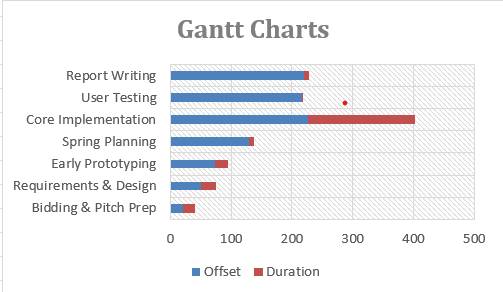

A suite of VR rehab mini‑games designed for repeatable training: simple to learn and tuned for comfort and lower limb rehabilitation.
My personal Contributions
Core gameplay systems: Built the Maze and Chase mini-games, including procedural map generation, coin collection, enemy AI, player health/damage, and win/lose flows.
Team leadership (mini-group): Scoped and coordinated tasks across Maze/Chase/Red Light–Green Light, aligning implementations and integration milestones.
Co-development: Implemented Red Light–Green Light and the central Game Hub together with Gang Yang (shared logic, UI entry flow, and integration).
Documentation & reporting: Authored major sections of the interim and final reports (background, requirements & critical analysis, game design, project management), and produced the system architecture diagram.
Process & version control: Maintained the Git workflow and recorded team meeting notes during the first semester; wrote the overall structure for the report, User Manual, and Software Manual.
Technical Breakdown
Architecture: Modular pipeline: treadmill/controllers/head tracking are normalized by an Input Manager, then fed into a game-logic core (movement, AI, difficulty, interactables).
UI/UX and telemetry/settings attach as side modules, while a hardware-abstraction layer isolates Quest/VR SDK specifics for portability and testing.

Performance:
Targeted Quest 2 constraints and stabilised frame rate in VR builds:
We ran development as short, time-boxed sprints (1–2 weeks) with a shared Gantt timeline for
milestones. Each cycle started with backlog refinement and sprint planning, then ended with a
supervisor demo (Sprint Review) and a retrospective. Action items from the retro were carried
into the next sprint, keeping progress measurable and feedback-driven.

Process adjustment: We initially used Jira for sprint tracking and traceability,
but as the core implementation team became smaller, we switched to a lighter workflow
(Discord for rapid coordination + GitLab Merge Requests as the “source of truth”) while
keeping the sprint cadence and reviews.
Collaboration fix: Unreal projects are asset-heavy and many files are binary,
making merges slow and manual. We adopted Git LFS, merged little-and-often, and required
peer-reviewed Merge Requests. When two branches diverged heavily, we enforced a short
feature freeze to safely integrate and validate the build.
Team learning loop: Early on, we used small “learning projects” to ramp up Unreal
skills, shared outcomes across the team, and added structured pair-programming sessions
to unblock tricky Blueprint/UI integration tasks.
Results
Delivered a functional Unreal Engine 5 prototype for standalone Meta Quest 2, featuring a hub world and four
rehab-focused mini-games (Maze, Chase, Red Light/Green Light, Unicycle). The build includes clear gameplay loops
(coins, scoring/power-ups), AI-driven challenge (e.g., chasing enemies), and adjustable difficulty to support
different ability levels.
What shipped
Hub world connecting all mini-games with consistent UI and navigation.
Complete game loops: objectives, scoring/rewards, and fail states.
Core systems: health/damage, interactables, and enemy pressure (chase scenarios).
Engineering highlights
Performance tuned for mobile VR (reduced costly VFX/post-processing and Blueprint overhead).
Comfort-aware controls (discrete turning where needed; consistent mapping across games).
Documentation deliverables: user manual + software manual + final report.
Evaluation (User Testing):
Ran a 10-participant playtest + semi-structured interview (participants with prior rehab / lower-limb injury experience; mixed VR familiarity).
Sessions followed: onboarding → hub exploration → Red Light/Green Light → Maze & Unicycle → interview. Consent collected and data anonymised.
Key findings
High engagement across all participants; strong “fun/immersive” feedback.
Usability pain points: menu clarity; some confusion with 90° turn controls.
This page follows the structure:
TL;DR → demo → My personal Contributions → tech breakdown → Project Management → Result & Evaluation.
That consistency helps reviewers compare quickly.